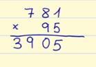
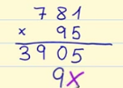
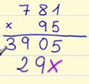
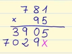
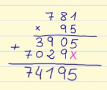

Multiplicación
-
Pasos para hacer una multiplicación de 2 cifras
El primer paso de tu multiplicación de 2 cifras es igual a hacer una multiplicación con una cifra. Multiplicamos las unidades del multiplicador por las cifras del multiplicando. El resultado de esta multiplicación lo ponemos en la fila de abajo. Tienes que ir número por número, y recuerda, siempre en orden de derecha a izquierda

Primero multiplicamos 5 x 1, el resultado de esta multiplicación es 5. Lo ponemos justo debajo de las Unidades.
Después multiplicamos 5 x 8, el resultado de esta multiplicación es 40, ponemos el cero debajo de las decenas y recordamos que nos llevamos 4 para la siguiente multiplicación.
Por último multiplicamos 5 x 7, el resultado de esta multiplicación es 35, pero recuerda que te llevabas 4 de la anterior multiplicación, por lo que el resultado final es 35 + 4 = 39, lo colocamos debajo de las centenas.
El segundo paso es multiplicar las decenas del multiplicador por las cifras del multiplicando. El resultado de esta multiplicación lo ponemos en la fila de abajo, pero desplazado una posición a la izquierda. Aquí también tienes que ir número por número y siempre realizamos la multiplicación de derecha a izquierda:

Movemos a la izquierda la primera posición, por lo tanto en la primera posición no escribas nada. Ahora multiplicamos en orden las decenas por cada uno de los números del multiplicando: 9 x 1, el resultado de esta multiplicación es 9 y lo escribimos debajo del cero.

Ahora multiplicamos 9 x 8, el resultado de esta multiplicación es 72, escribimos el 2 debajo del 9 y nos llevamos 7.

Por último, para terminar esta parte de la multiplicación, multiplicamos 9 x 7, el resultado de esta multiplicación es 63, pero recuerda que te llevabas 7 de la multiplicación anterior, por lo que el resultado es 63 + 7 = 70. Lo colocamos debajo del 3.
El último paso para terminar tu multiplicación es la suma. Ahora tenemos que sumar los productos que nos han dado en la multiplicación.

Ya tienes tu multiplicación, ¿fácil verdad?